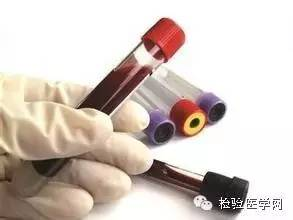

最新动态
Latest News
停经40天时，准妈妈做的妊娠尿样呈阳性，医生会告诉你：“你怀孕了”，还会向准妈妈交代警惕宫外孕，如有腹痛、阴道出血应立即看急诊。如一切正常，等到孕14周时再来医院做检查。到了14周，该做的检查项目就更全面了。
以下提及的化验检查均在准妈妈建立生产档案时化验，准妈妈于抽血前一晚需清淡饮食，忌吃大鱼大肉，抽血当天早晨需空腹。

1． 血常规检查
检查项目：血红蛋白、血小板、白细胞等。
主要是判断准妈妈是否贫血，正常值是100g/L-160g/L。轻度贫血对准妈妈及分娩的影响不大，重度贫血可引起早产、低体重儿等不良后果。
看懂检查报告：
◆白细胞在机体内起着消灭病原体，保卫健康的作用，正常值是4-10×109/L，超过这个范围说明有感染的可能，但孕期可以轻度升高。
◆血小板在止血过程中起重要作用，正常值为100-300×1012/L，如果血小板低于100×1012/L，则会影响准妈妈的的凝血功能。
2．尿常规检查
检查项目：尿液中蛋白、糖及酮体，镜检红细胞和白细胞等。
正常情况下，上述指标均为阴性。
看懂检查报告：
◆如果蛋白阳性，提示有妊娠高血压、肾脏疾病的可能。
◆如果糖或酮体阳性，说明有糖尿病的可能，需进一步检查。
◆如果发现有红细胞和白细胞，则提示有尿路感染的可能，需引起重视，如伴有尿频、尿急等症状，需及时治疗。
3．肝、肾功能检查
检查项目：谷丙转氨酶(GPT)、谷草转氨酶(GOT)、尿素氮(BUN)、肌酐(Cr)等。
这些主要是为了检查准妈妈有无肝炎、肾炎等疾病，怀孕时肝脏、肾脏的负担加重，如果上述指标超过正常范围，提示肝、肾功能不正常，怀孕会使原来的疾病“雪上加霜”。
看懂检查报告：
◆肝功能正常值：谷丙转氨酶0-55U/L；谷草转氨酶0-55U/L。
◆肾功能正常值：尿素氮9-20mg/dl；肌酐0.5-1.1mg/dl。
4．血型检查
检查项目：（1）ABO血型 ；（2）Rh血型。
检查血型，以备生产时输血，准妈妈了解自己的血型很重要。
看懂检查报告：
◆如果准爸爸为A型、B型或AB型血，准妈妈为O型血，生出的小宝宝有ABO溶血的可能。
◆在亚洲人中Rh血型阴性的较少，大多数为Rh血型阳性。如果男女Rh血型不合，也有可能发生小宝宝溶血。
◆如果准妈妈为Rh阴性，在生产前医院还要预先备好Rh阴性的血液，一旦分娩时发生意外，就能够及时输血。
5．梅毒血清学试验
检查项目：（1）螺旋体抗体血凝试验(TPHA)；（2）快速血浆反应素试验(RPR)。
梅毒是由梅毒螺旋体引起的一种性传播性疾病。如果准妈妈患梅毒可通过胎盘直接传给胎儿，有导致新生儿先天梅毒的可能。
看懂检查报告：
正常准妈妈这两项试验结果均为阴性反应。当机体受到梅毒螺旋体感染后，会产生两种抗体，表现为RPR阳性和TPHA阳性。RPR阳性的特异性不高，会受到其它疾病的影响而出现假阳性，TPHA阳性可作为梅毒的确诊试验。
6．艾滋病的血清学检查
检查项目：艾滋病(HIV)抗体。
艾滋病是获得性免疫缺陷综合征的直译名称，是一种严重的免疫缺陷疾患，其病原体是HIV病毒。正常准妈妈HIV抗体为阴性。
看懂检查报告：
如果感染了HIV病毒，则结果为阳性。HIV病毒会通过胎盘传播给胎儿，会造成新生儿HIV病毒感染。
7．淋病的细菌学检查
检查项目：淋球菌培养。
淋病是由淋病双球菌引起的性传播疾病，通过不洁性交直接传播，也可通过被淋病污染的衣物、便盆、器械等传播，也可通过患母的产道传染给新生儿。
看懂检查报告：
一般是取准妈妈的宫颈管分泌物做淋菌培养，正常孕妇培养结果为阴性。如果为阳性，说明有淋球菌的感染，需及时治疗。
8．乙型肝炎(HBV)病毒学检查
检查项目：乙肝病毒抗原和抗体。
在病毒性肝炎中，以乙型肝炎发病率最高，在妊娠早期可使早孕反应加重，且易发展为急性重症肝炎，危及生命。乙肝病毒可通过胎盘感染胎儿，母婴传播的概率达到90%以上。
看懂检查报告：
◆正常准妈妈各项指标均为阴性。
◆如果单纯乙型肝炎表面抗体(HBsAb)阳性，说明以前感染过乙肝病毒，现已经痊愈，并且对乙肝病毒具有免疫力。
◆如果其它指标(HBsAg、HBeAg、HBeAb、HBcAb IgG、HBcAb IgM)呈阳性则需引起重视，说明目前病毒具有传染性，应向医生进行咨询。
9．唐氏综合症产前筛查
检查项目：唐氏综合症血清学筛查。
唐氏综合症产前筛查是用一种比较经济、简便、对胎儿无损伤性的检测方法在准妈妈中查找出怀有先天愚型胎儿的高危个体。先天愚型的发病率为1/1000(新生儿)，是严重先天智力障碍的主要原因之一，正常夫妇亦有生育先天愚型患儿的可能，并且随着母亲年龄的增高其发病率亦增高。
看懂检查报告：
每位准妈妈在孕中期14—20周之间进行检查，阴性报告只表明胎儿发生该种先天异常的机会很低，并不能完全排除这种异常。产前筛查结果以风险率表示，>1/275为筛查阳性，则需进一步作羊水检查。
10、TORCH综合症产前筛查
检查项目：风疹病毒(RV)、弓形虫(TOX)、巨细胞病毒(CMV)、单纯疱疹病毒(HSV)抗体。
准妈妈在妊娠4个月以前如果感染了以上这些病毒，都可能使胎儿发生严重的先天性畸形，甚至流产。
看懂检查报告：
最好是在准备怀孕前进行此项检查，正常为阴性，如果检查呈阳性，应经治疗后再怀孕。对于家中养宠物的准妈妈更要进行检查。
11、心电图检查
检查项目：心电图。
这项检查是为了排除心脏疾病，以确认准妈妈是否能承受分娩。
正常情况下结果为：正常心电图。如心电图异常，需及时向医生咨询，并作进一步检查。
12、超声检查
检查项目：B超。
通过B超检查可以看到胎儿的躯体，头部、胎心跳动，胎盘、羊水和脐带等。可检测胎儿是否存活，是否为多胎、甚至还能鉴定胎儿是否畸形(如无脑儿、脑积水、肾积水、多囊肾短肢畸形、联体畸形、先天性心脏病等)。
看懂检查报告：
◆羊水深度在3—7厘米之间为正常，超过7厘米为羊水增多，少于3厘米则为羊水减少，都对胎儿生长不利。
◆胎心存在，说明胎儿存活。正常胎心率为120—160次/分，低于或超出这个范围则提示胎儿在宫内有缺氧的可能。
13、阴道分泌物检查
检查项目：白带清洁度、念珠菌和滴虫、线索细胞。
白带是阴道粘膜渗出物、宫颈管及子宫内膜腺体分泌物等混合组成。
看懂检查报告：
◆正常情况下清洁度为Ⅰ—Ⅱ度， Ⅲ—Ⅳ度为异常白带，表示阴道炎症。
◆念珠菌或滴虫阳性说明有感染，需进行相应的治疗，正常值为阴性。
◆线索细胞是细菌性阴道病最敏感最具特异性，在阴道分泌物中找有线索细胞即可做出细菌性阴道病的诊断，如为阴性说明正常。
14、妊娠糖尿病筛查
检查项目：50克葡萄糖负荷试验。
这是一种妊娠糖尿病筛查试验。在妊娠24—28周进行，口服含50克葡萄糖的水，一小时后抽血检测血浆血糖值。
看懂检查报告：
如果≥7.8mmol/L(或140mg/dL)，则说明筛查阳性，需进一步进行75克葡萄糖耐量试验，以明确有无妊娠糖尿病。
来源：检验医学网
2019年07月04日
上一篇：
下一篇：
14项孕检项目全面解析
添加时间: